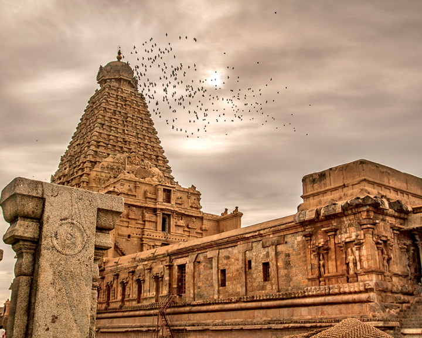

You will find information about various Indian Monuments.
Taj Mahal

The Taj Mahal is a UNESCO World Heritage Site located in Agra, India. Built by Mughal Emperor Shah Jahan in memory of his wife Mumtaz Mahal, it is renowned for its stunning white marble architecture. Completed in 1653, it is considered a masterpiece of Mughal architecture and is one of the most recognizable landmarks in the world. The Taj Mahal complex includes a mosque, a guest house, and beautiful gardens, all adding to its grandeur. Its symmetrical design and intricate decorative elements make it a symbol of enduring love and a must-visit destination for tourists from around the globe.
You can get more information on this website
Hawa Mahal
The Hawa Mahal, located in Jaipur, India, is a unique architectural structure built in 1799 by Maharaja Sawai Pratap Singh. Its name, which translates to "Palace of Winds" or "Palace of Breezes," refers to its numerous windows (953, to be exact) that allow cool air to circulate throughout the building, making it an early form of air conditioning. The palace was designed to allow royal women to observe street festivals and everyday life without being seen by the public due to the strict rules of purdah (seclusion) at the time. Its five-story façade, with its distinctive pink color and intricate latticework, is a notable landmark in Jaipur and a symbol of the city's rich cultural heritage.
India Gate

The India Gate is a war memorial located astride the Rajpath, on the eastern edge of the "ceremonial axis" of New Delhi, formerly called Kingsway.
Red Fort

The Red Fort, built by Emperor Shah Jahan in 17th-century Delhi, is an iconic symbol of Mughal architecture. Its red sandstone walls enclose a majestic complex of palaces, halls, and gardens. Notable features include the Diwan-i-Khas and Diwan-i-Aam, where the emperor held private and public audiences. The fort's Moti Masjid, or Pearl Mosque, showcases stunning white marble craftsmanship.
Declared a UNESCO World Heritage Site in 2007, the Red Fort remains a cultural and historical treasure, attracting visitors from around the world.
Chola Temple
The Chola dynasty, which flourished in South India from the 9th to the 13th centuries, left an indelible mark on the region's history, particularly through their patronage of art and architecture. Among their most iconic contributions are the Chola temples, renowned for their architectural grandeur and intricate carvings. The Brihadeeswarar Temple in Thanjavur, Tamil Nadu, stands as a masterpiece of Chola architecture. Built by Emperor Rajaraja I in the 11th century, this UNESCO World Heritage Site is dedicated to Lord Shiva and features a towering vimana (temple tower) that reaches a height of 66 meters (216 feet). Adorned with exquisite sculptures and inscriptions, the temple is a testament to the Chola dynasty's artistic and architectural prowess, attracting visitors from around the world to marvel at its beauty and cultural significance.